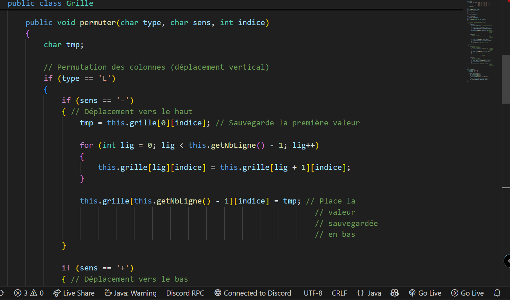

Cette compétence consiste à concevoir et développer une application en respectant les besoins exprimés par le client.
Contexte : Projet issu d'une SAE où nous avons dû créer un jeu de plateforme à partir des contraintes données par les professeurs.
Langage utilisé : JAVA
Fonctionnalités principales :
Ce que j'ai appris : J'ai appris à travailler en équipe tout en respectant les besoins du client. J'ai également appris à créer des interfaces graphiques en JAVA.
Contexte : Ce projet implémente le jeu de puzzle Taquin, qui est un jeu de glissement de tuiles. Le but est de réorganiser les tuiles pour former une image ou une séquence de nombres dans l'ordre correct.
Langage utilisé : JAVA
Fonctionnalités principales :
Ce que j'ai appris : J'ai appris à créer une interface graphique avec javax.swing et à gérer le déplacement correct des éléments.
Je sais choisir quand il faut créer une nouvelle méthode ou bien une nouvelle classe. Je sais aussi respecter la méthode MVC, comme vous pouvez le voir avec le projet n°2.
Pour créer le jeu du Taquin, j'ai suivi la méthode MVC en séparant le métier, qui représente la logique, et la vue, qui s'occupe de l'interface utilisateur.
La partie Contrôleur sert à faire le lien entre la vue et le métier.
La partie Grille représente le métier du jeu. Elle gère la logique et les règles de celui-ci.
Les parties FrameGrille et PanelGrille représentent la vue du jeu. Elles gèrent l'interface utilisateur et l'affichage des tuiles.
Les projets n°1 et n°2 me permettent de valider ce critère car ils répondent aux spécifications du client en matière de fonctionnalités et d'ergonomie.
J'ai appliqué les bonnes pratiques : nommage cohérent, structure claire et respect de l'indentation Allman.

J'ai testé mes applications avec différents scénarios et corrigé les bugs identifiés. Pour le projet 1, le rendu au professeur ne comprenait pas la chute lente, que j'ai ajoutée par la suite.
Pour le projet n°2, j'ai créé une interface avec javax.swing. J’ai organisé les composants pour qu’ils soient facilement accessibles. Par exemple, le plateau de jeu est centré, et les boutons de contrôle sont bien visibles. Je reconnais cependant que l’ergonomie peut encore être améliorée.
J'ai identifié mes points forts et mes axes d'amélioration, ce qui m’aide à progresser.